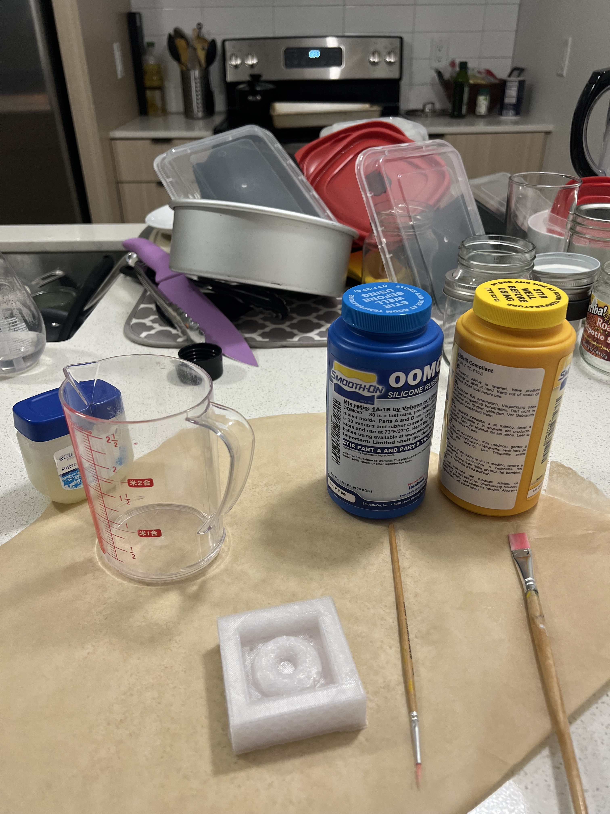
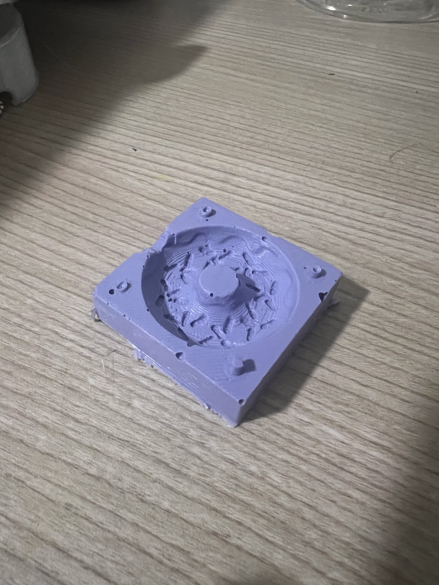
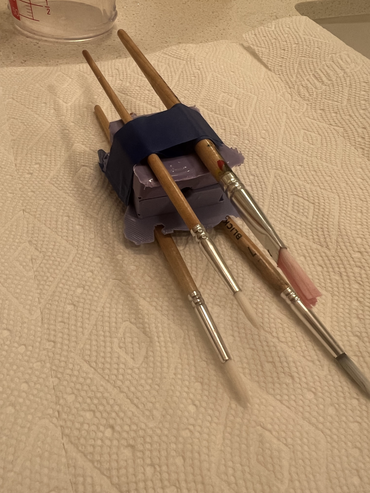
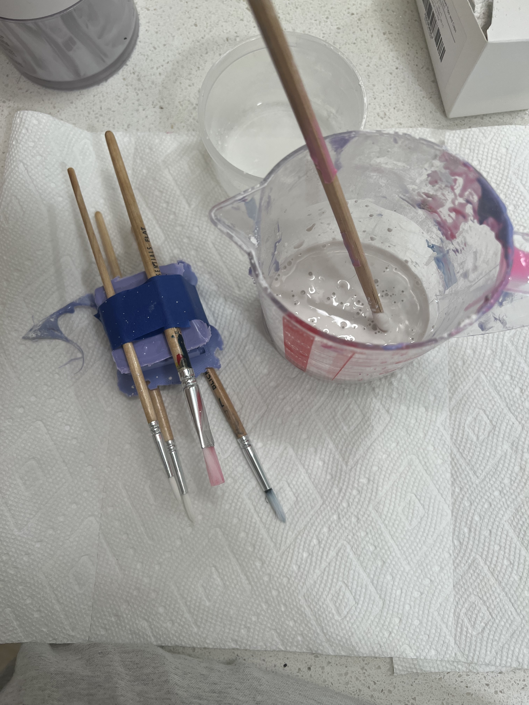
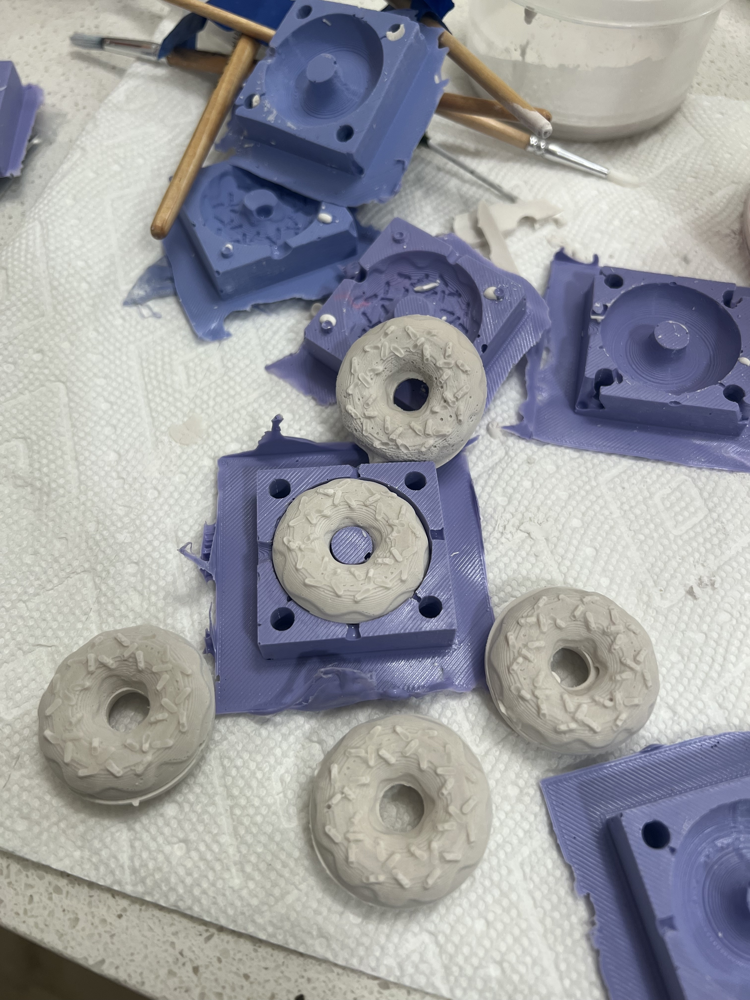
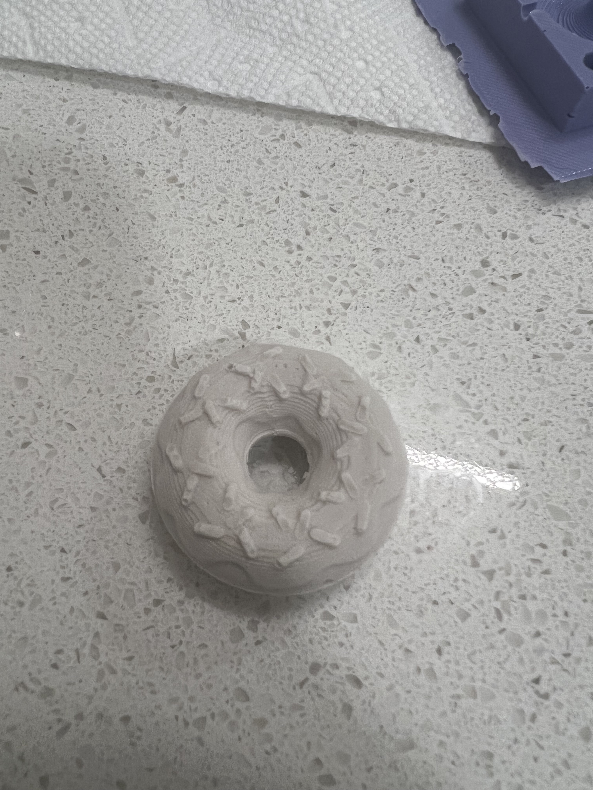

Bailey Dickey's Assignment 6!
Molding and casting (pt 2/2)!

Assignment Prompt
Design and fabricate a 2-part (silicone) mold. You will need to use the mold to cast at least 4 identical parts (e.g. in plaster).
Process
First, I printed my mold for molds using my 3d printer! I did not run into any particular challenges after learning to heat my printer up more and print using a slower speed during the lamp assignment.
Next, I chose to skip the acetone smoothing step as I wanted a bit of the printer texture on the final donut to make paint adhesion and the imperfect baked texture to come through. So, I jumped into casting my molds using Oomoo. I have worked with this product before, and upon opening my package, I quickly realized that I was working with a less-than-ideal batch. The pink mix was the texture of pre-chewed bubble gum, indicating that it was likely slightly past its prime. I proceeded despite finding this texture concerning and carefully used a thin stick to ensure the Oomoo was pushed down into all of the mold crevices.
Finally, I cast my mini donuts using the provided plaster! The donuts came out fairly well, although they did have some minor imperfections
   Source Files
- See my last post for donut sources.